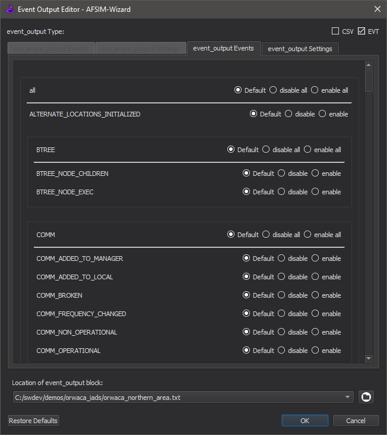
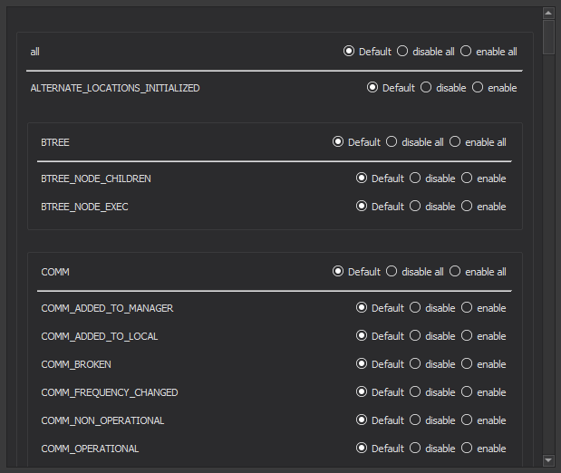

Event Output Editor - Wizard¶
The Event Output Editor allows the user to add and edit csv_event_output and event_output blocks in AFSIM input files. This editor is intended to be a replacement to writing csv_event_output and event_output blocks in AFSIM input files manually. To access the editor, go to the Tools menu and click “Event Output Editor” or right-click on the editor and click “Event Output Editor”.
Note
The editor tabs that open up in the background are read-only when the Event Output Editor is open. The editor tabs go back to normal when the editor is closed.
Features¶
The event_output Type check boxes allow the user to toggle the settings and events tabs for the respective format. The block format check boxes allow the user to toggle whether or not to write the block on a single line.
The Settings Tab¶

The settings tab contains a table with all the available settings for the respective format.
Each row in the table contains the following:
A check box denoting whether or not to add the setting into the block.
A label denoting the particular setting (the “command”).
Right-clicking on the label brings up a context menu containing a documentation link for the setting.
Note
The URL redirection is guaranteed to work on Chrome and Firefox, but not Microsoft Edge or Internet Explorer.
A widget denoting the “value” of the particular setting.
If the setting takes a boolean value, then the widget is a check box.
If the setting takes a literal value, then the widget is a combo box.
Note
WSF supports multiple terminologies for boolean values, such as no/yes, disable/enable, and false/true. For simplicity, the Event Output Editor refers to boolean values using the false/true terminology.
The combo box contains some preset values and the last item in it allows the user to input a literal value manually.
The Events Tab¶
The events tab contains a list of all the available events supported by AFSIM. The events are grouped by prefix (in particular, the portion of the event name before the first underscore).
Each item in the events list contains the following: * A label denoting the particular event (the “command”).
Right-clicking on the label brings up a context menu containing a documentation link for the setting.
Two check boxes allowing the user to disable or enable the event
If no check box is checked, then the event is not written out to the block.
If the disable check box is checked, then “disable <event>” is written out to the block.
If the enable check box is checked, then “enable <event>” is written out to the block.
The File Locator¶
The combo box stores the names (absolute paths) of all the input files for the current scenario/project. Changing the file name will stash the changes of the previous file load the other file. The browse button opens a file dialog allowing the user to find any AFSIM input file to open with the Event Output Editor.
Note
Selecting the same entry in the combo box will reload the file.